Good maintenance is not about making your aquarium "sterile". It is about creating long-term stability and balance.
Every aquarium is different, and learning how your specific tank behaves is one of the biggest parts of the hobby.
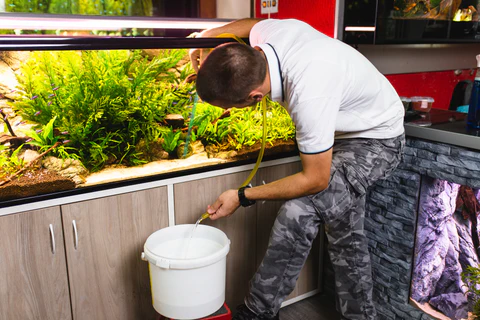
Water changes remove excess nutrients, waste, and pollutants while replenishing minerals.
There is no magical water change schedule that works for every tank.
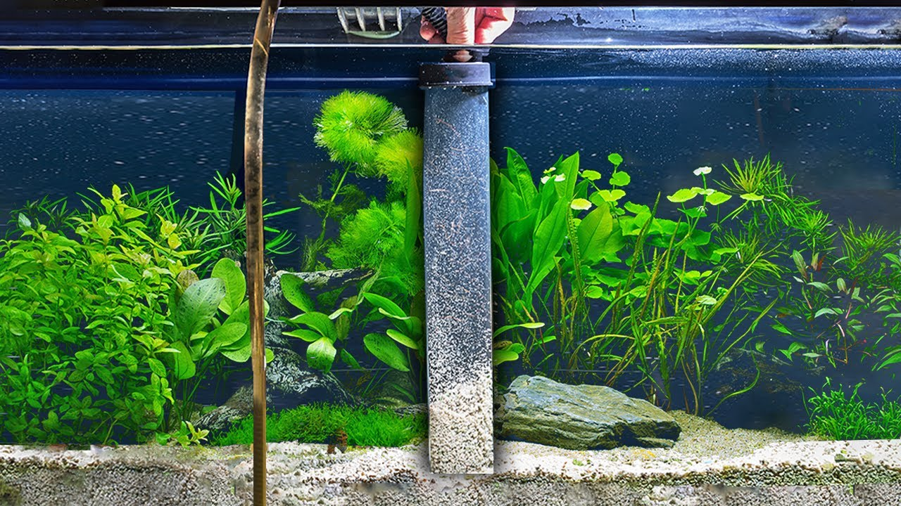
Removes trapped waste from the substrate and prevents excess nutrient buildup.
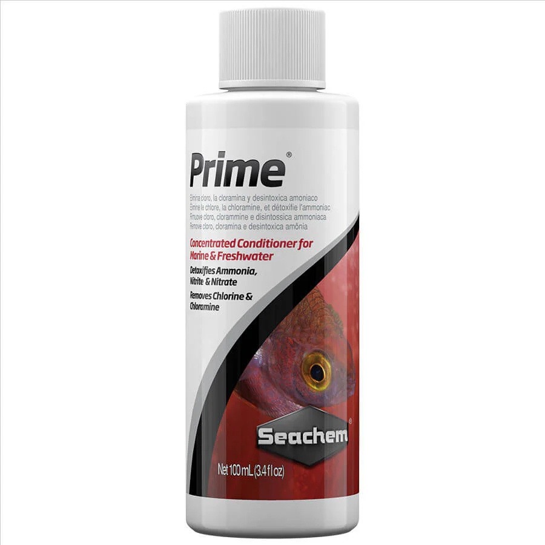
Tap water chlorine and chloramine can wipe out beneficial bacteria and harm livestock.
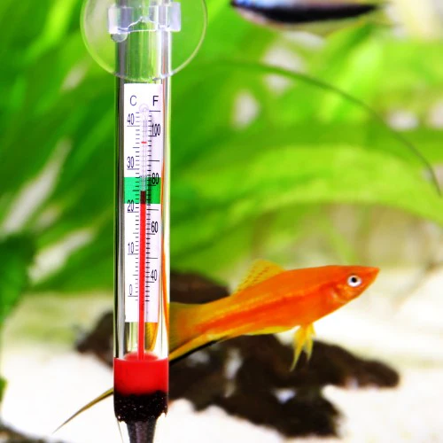
Sudden temperature swings can stress fish and shrimp during maintenance.
Match the new water's temperature to the aquarium water for safer changes, especially in bigger
water changes.
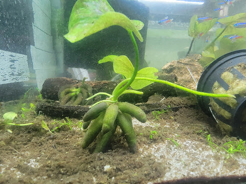
Mulm is the soft organic debris that naturally accumulates in aquariums.
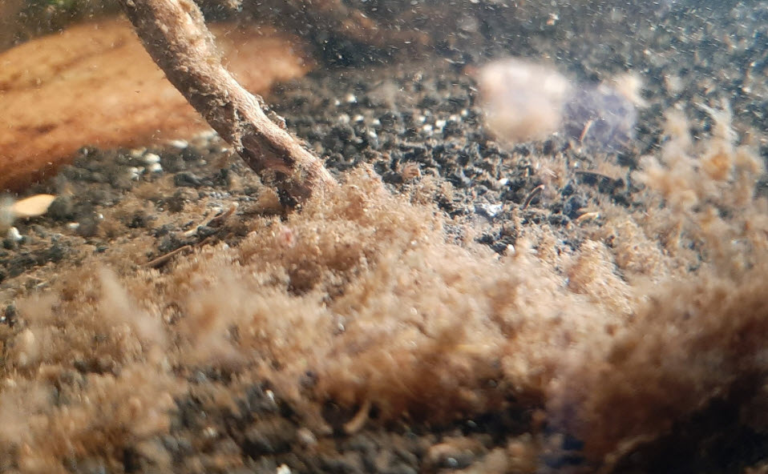
Mulm contains microorganisms and biofilm that shrimp and fry may graze on.
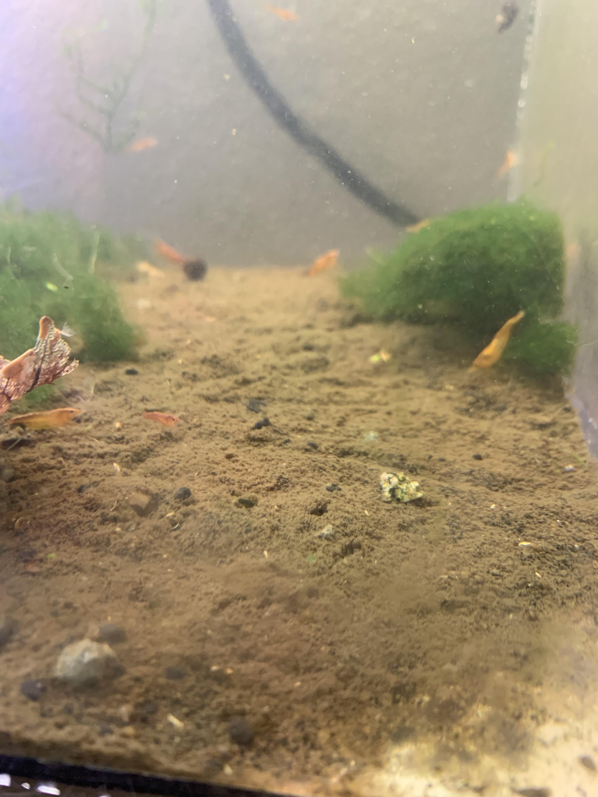
Excess buildup can reduce water quality and create algae problems.
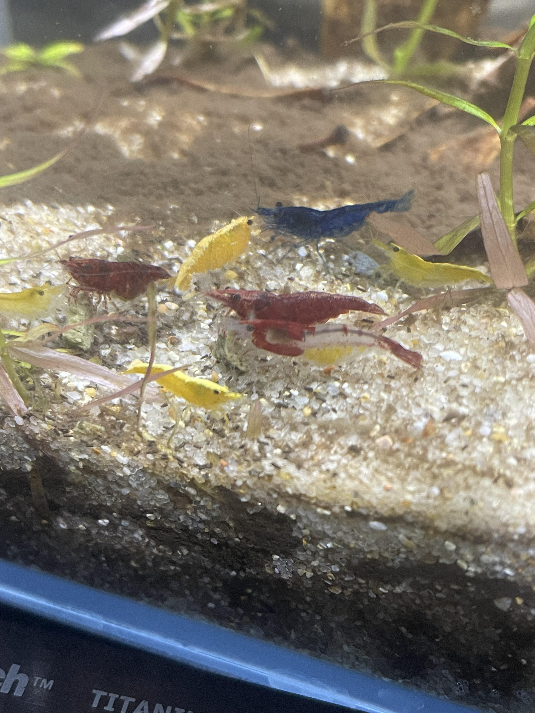
Healthy mature mulm often supports grazing behavior in shrimp tanks.
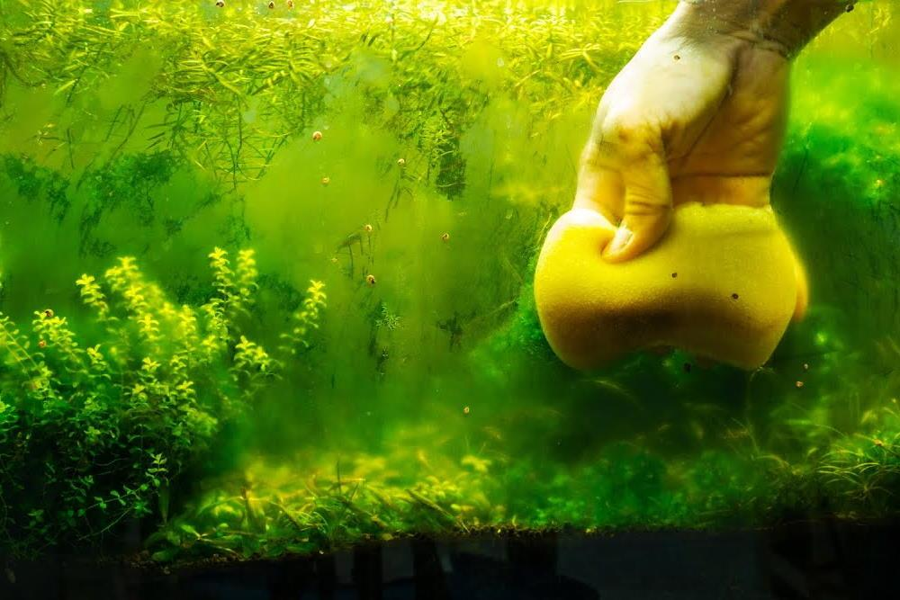
Algae is normal. Every aquarium has some algae.
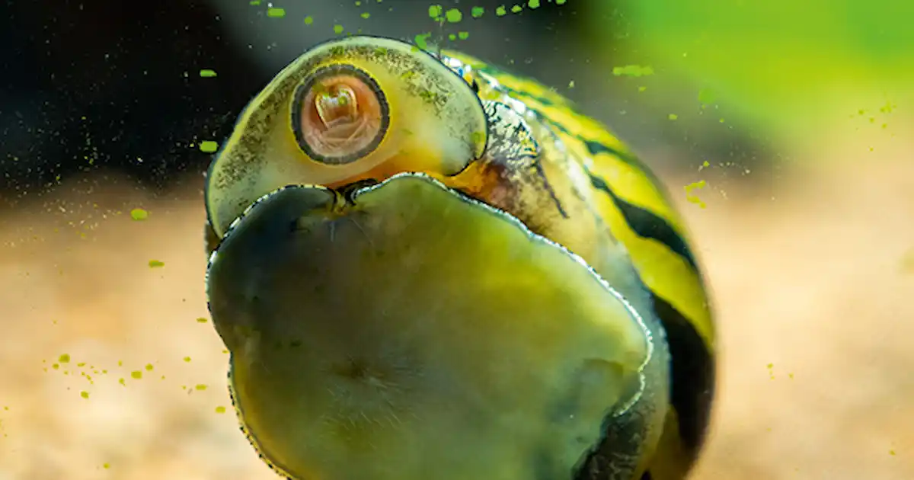
Nerites and ramshorns help clean soft algae from glass and hardscape.
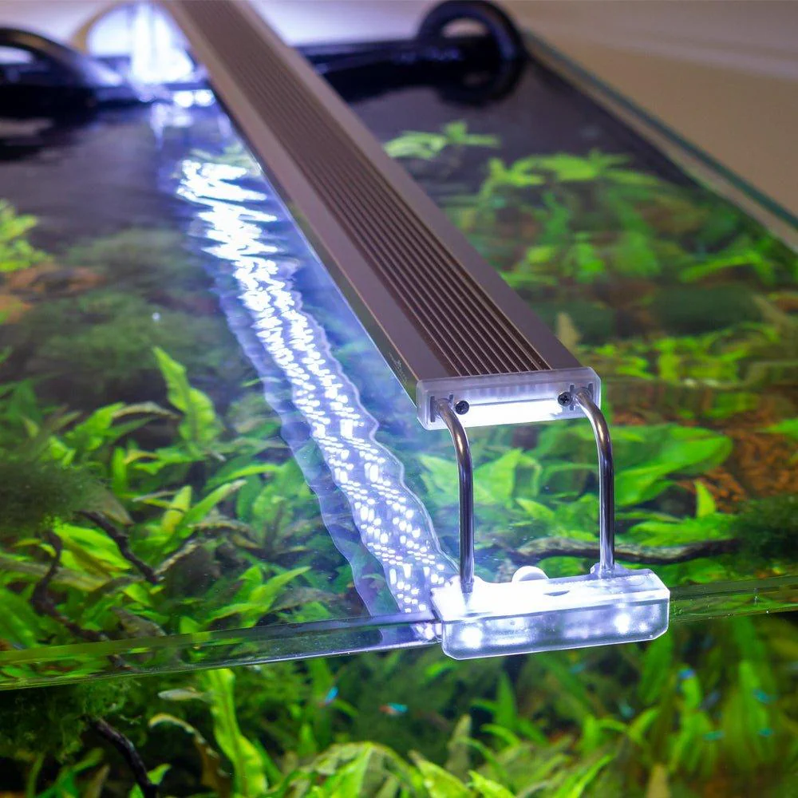
Excessive photoperiods often trigger algae blooms.
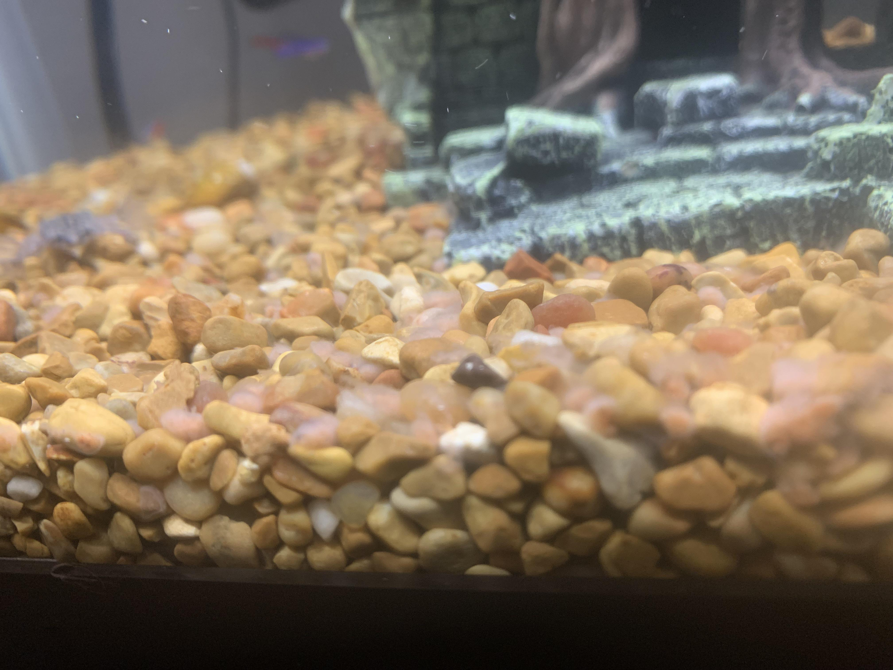
Uneaten food quickly becomes algae fuel.
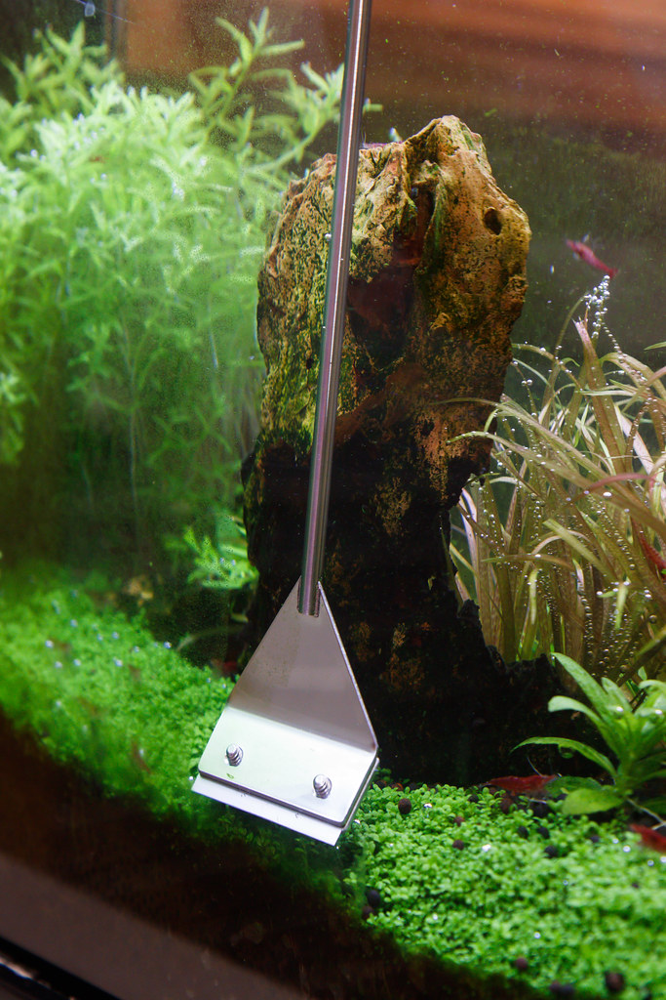
Physically removing algae weakens future growth and restores appearance.
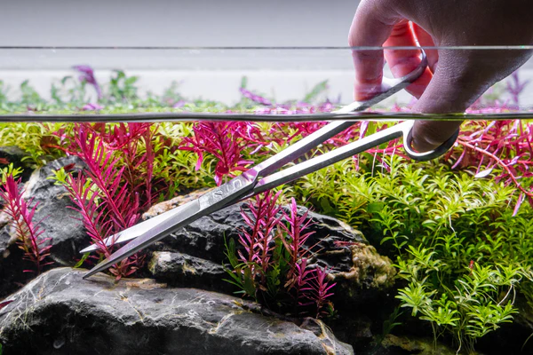
Regular trimming keeps plants healthy, improves circulation, prevents dead zones, and encourages bushier growth.
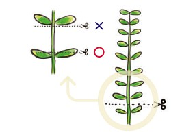
Cut above a node or leaf pair. Most stem plants can be replanted from cuttings, allowing easy propagation and thicker growth.
More info
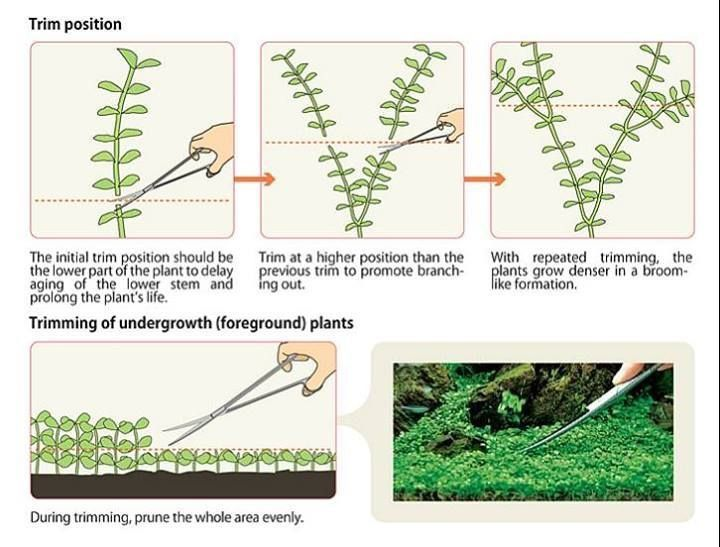
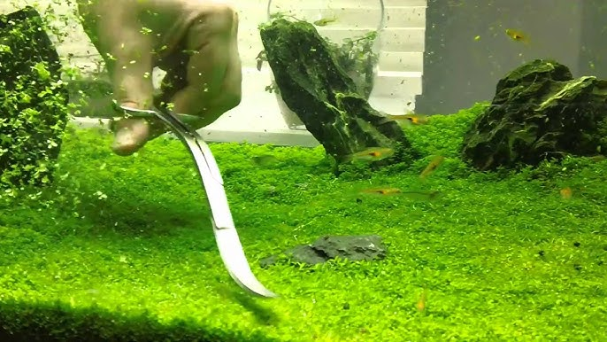
Trim horizontally like mowing grass. This prevents lower layers from being shaded and dying underneath.
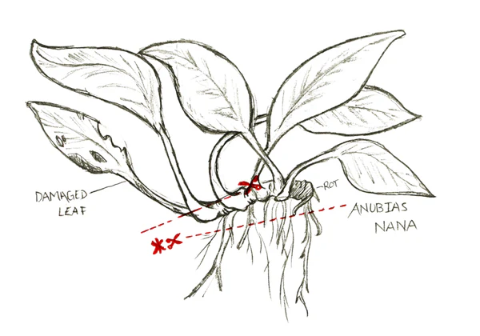
Remove damaged or algae-covered leaves individually. Never bury the rhizome or the plant may rot.
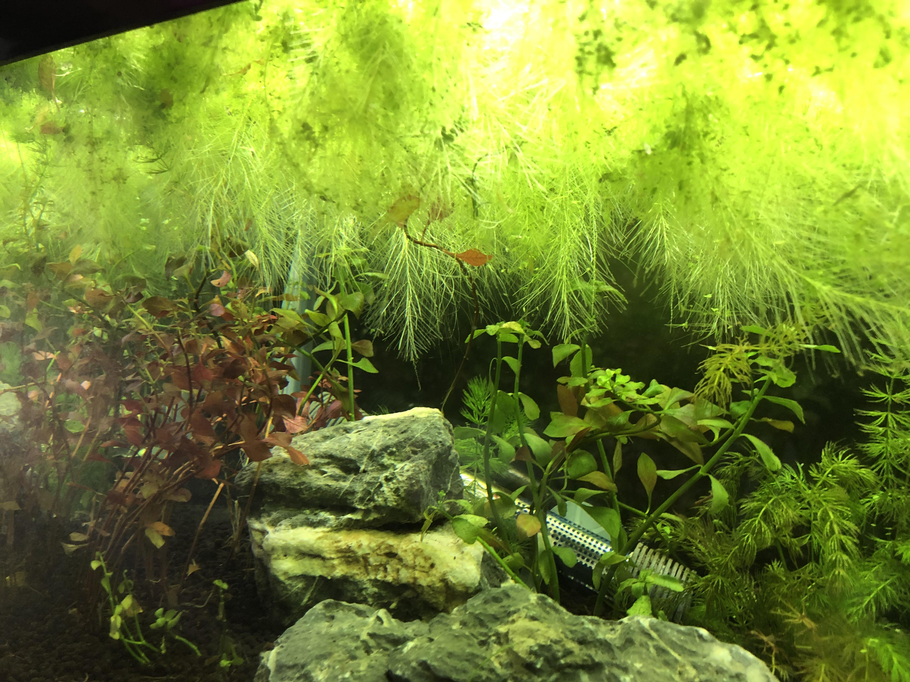
Thin floating plants regularly to maintain oxygen exchange, healthy surface movement, and light penetration.
Explore the dedicated plant guides for detailed species information, care requirements, attachment methods, and substrate advice.